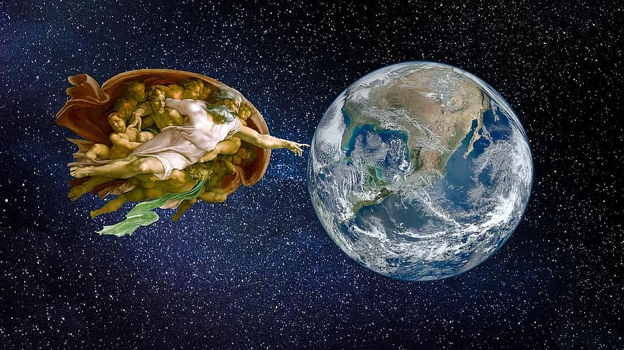

Aaron Jutzi's Website

Aaron Jutzi
Education
Fleming College
- Geographic Information Systems, Applications Specialist
- 2020 - 2021
Carleton University
- Bachelor of Arts Honours, Geomatics
- Sept 2019 - Dec 2019
Experience
Geographic Information Systems Practicum
- CartoVista
- Sept 2019 - Dec 2019
- Gatineau, Quebec, Canada
Skills
- Proficiency with Esri ArcGIS products
- Proficiency with QGIS
- Managing data
- Extracting and manipulating geospatial data from the web
- Transforming data and creating workflows using FME
- Geospatial analysis
- Remote sensing
- Cartography
Volunteer Experience
Friendly Visiting Volunteer
- OneCare
- February 2020 - Present
Merchandise Tent Volunteer
- Ottawa Bluesfest
- July 2017